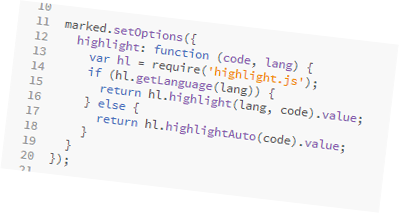

How I built the present GitHub userpage static site
I needed a blog but I was unhappy with the services out there. I wanted full control over the how it looks (even though I am not a designer) and behaves. I also wanted to have my content on my computer.

The idea
This is how i got to the idea of hosting a static user page at GitHub. Looking around for static site generators I found Jekyll and Octopress a framework based on Jekyll. But...
The problem
I am a Windows user and installing, configuring and running ruby on a windows machine is no easy task. On the other hand I am not using ruby and taking the trouble to install it just for the sake of Jekyll it was not appealing. So, as a developer, I decided to build my own basic static web site generator.
This gave me the oportunity to use my tools of choice: nodejs, gulpjs and of course git.
And this is how the jurney beggins.